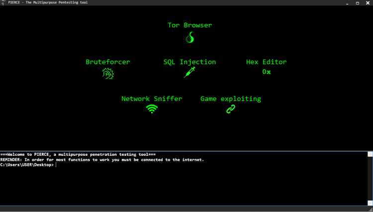
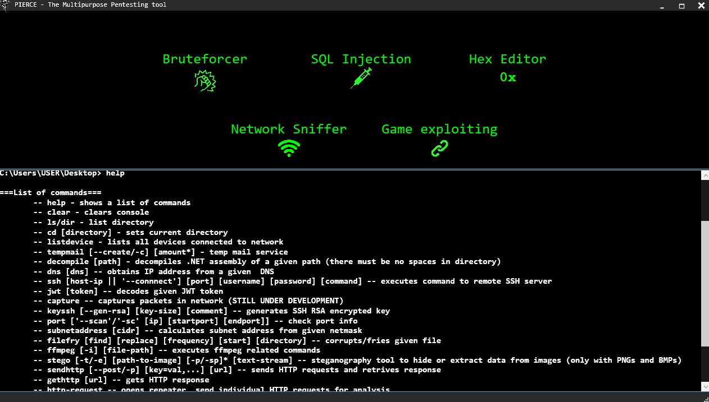
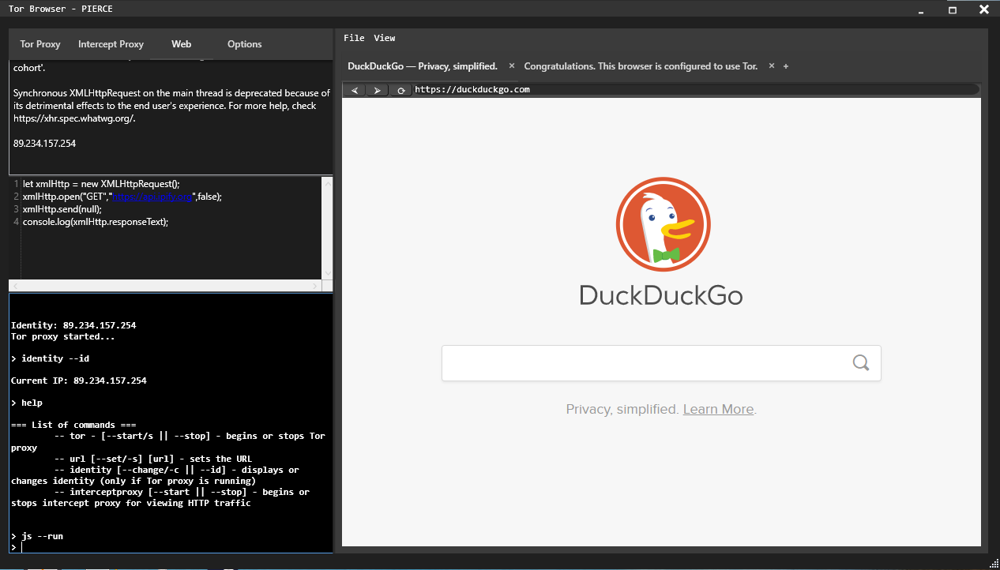
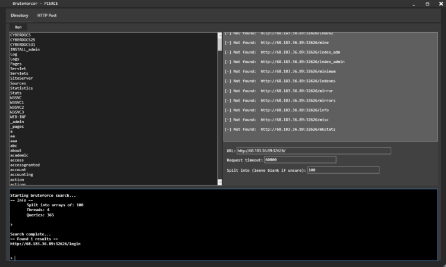
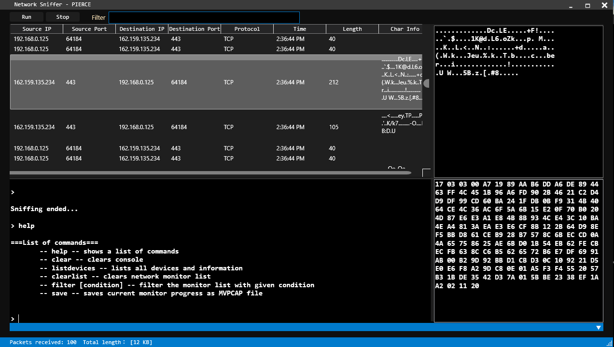

THE PIERCE PROJECT
Logo by @Piss_Couch
The PIERCE project is an open-source multifunctional penetration testing tool designed to accomplish all types of tasks. From bruteforcing, network sniffing, Tor browsing or even game hacking, PIERCE tries to accomplish all certain types of tasks
It attempts to replicate the famous Kali Linux and Parrot OS, but as a singular tool. It's created in C# WPF, and because of this it means it only supports Windows.
The PIERCE project is still under development. But still a lot of features have been added throughout the project, and still many more to come.
The image shown here shows how the main interface currently looks like as of now. A very much user-friendly interface along side with a terminal at the bottom to execute certain tasks with its own command system.
There are a lot of features currently added within the PIERCE project. There are going to be plans to add more features as the project is unfinished. Plus making this project open-source for people to learn, understand and modify PIERCE to however they please.
Because there are quite a bit of features, here are some of the main and bigger features within PIERCE showcased here in the following images below.
   
Check out some of the other projects too like:
The "mVCMD" project